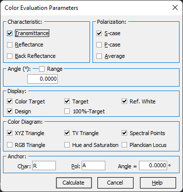
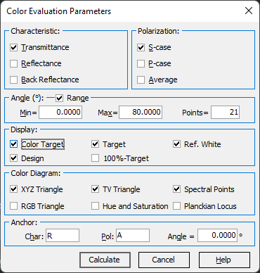

Color Evaluation Parameters
Color Evaluation Parameters
Navigation: OptiLayer Menu Commands > Analysis Menu > Color Evaluation >
Color Evaluation Parameters
` <idh_color_evaluation.htm>`__ ` <idh_color_evaluation.htm>`__ ` <idh_field_evaluation.htm>`__
Marking checkboxes corresponding to parameters for a Color Evaluation generally involves selecting options that are relevant to how you wish to assess or compare colors.

At least one characteristic type (Transmittance, Reflectance, Back Reflectance) and one state of polarization (S, P, A) should be chosen. The angle of incidence used in the Color Evaluation will be determined by default values corresponding to the current target function.
Display group checkboxes allow the selection of the Color Target, current Design, colors computed based on the loaded Target, and Reference White for presentation in the Color Coordinates window. Additionally, it is possible to compute colors corresponding to the complementary characteristic (100%-Target). In the case of dielectric coating, this can provide colors in transmittance derived from reflectance data and vice versa.
Settings in the Color Diagram frame correspond to the properties of the Color Diagram. Along with plotting all available colors in XY coordinates, you may add the following details to the diagram:
XYZ triangle - to display the borders of the XYZ triangle;
RGB triangle - to display the triangle of the RGB coordinate system;
TV triangle - to display the triangle created by standard computer monitor colors;
Hue and Saturation - to display lines of equal hue and saturation;
Spectral Points - to display points corresponding to pure spectral colors (with the step of 5 nm);
Planckian Locus - to display the chromaticities of complete radiators (i.e., the radiation sources which obey Planck’s law) at different absolute temperatures (with the step of 500 K).
Anchor settings are used for Color Difference evaluation based on the CIE DE2000 formula. The Char, Pol, and Angle parameters specify a Characteristic, Polarization, and Angle of Incidence for the color (anchor color) that will be used for comparison. The Anchor Color is calculated for the same design. Press Calculate to start the Color Evaluation procedure. Press Cancel if you do not wish to proceed with the Color Evaluation procedure. It is also possible to plot color characteristics corresponding to a given range of incident angles. For this purpose, activate the Range checkbox and specify the minimum and maximum values of the angle of incidence and the number of evaluation points.
